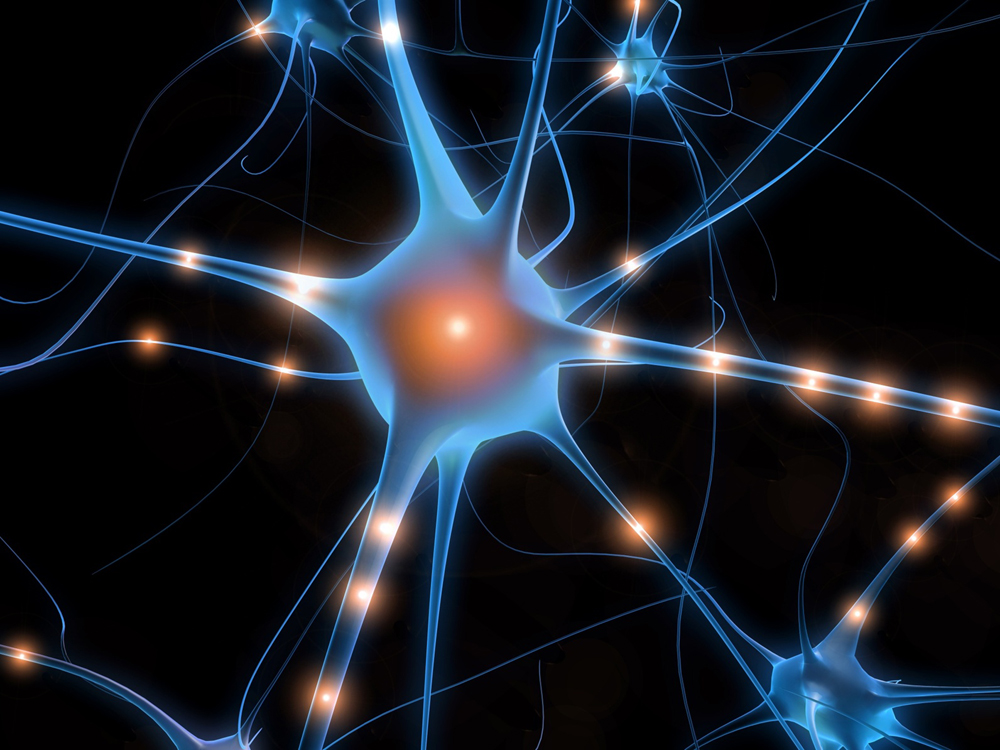

Evolutionary Medicine:
Pioneering work with stem cells explains Human Brain Evolution and could potentially launch the development of future therapies.
Aaron Taylor
Fall 2011

The answers to the future are often concealed within the past. It is
this principle that forms the foundation of evolutionary medicine — the
application of evolutionary theory to explain modern health and
diseases. Scientists commonly use this approach to study the human
brain. Knowledge gained from exploring the evolution of our brain,
establishes the subsequent development of new and innovative treatments.
Like other primates, the human brain is
exceptionally large in both weight (~1.5 kg) and neuron number (over 80
billion). This large size is due to the dramatic expansion of the
neocortex, which constitutes two-thirds of the brain. The neocortex is
the outer layer of the cerebral hemispheres, and consists of six layers
of grey matter composed of neuronal cell bodies and unmyelinated
fibers. This feature enabled humans to have higher cognitive abilities
such as language, rationalization, conscious thought, sensory input,
and motor commands.
Until recently, the evolution of the human
brain has been incompletely explained. What biological processes in the
mammalian brain are responsible for differences in neocortical size,
and how did these processes cause Homo sapiens to have a larger
neocortex? It is important to answer these questions because they can
lead to the establishment of new therapies for human neocortical
illness.
Researchers at the University of
California, San Francisco, discovered previously unidentified neural
stem cells in the developing fetal brain. Further analysis showed that
the method, by which these cells generate neurons, and how they
incorporate them into the neocortex, underlies the increased cortical
size and complexity of the human brain. Therefore, scientists can now
explain what causes the growth of the human neocortex. In addition, as
researchers continue to study these cells, new understandings of human
neocortical development will further illuminate neuro-developmental
diseases, age-related illnesses, and malformations during brain
maturation.
Neurologist Arnold Kriegstein, MD, PhD,
director of the Eli and Edythe Broad Center of Regeneration Medicine
and Stem Cell Research at UCSF, is the senior author of multiple
studies that identified two cells within a large region of the brain,
known as the outer subventricular zone (OSVZ). The latest of these
studies, a leading edge review article, is reported in a recent issue
of the journal Cell, (vol. no. 146, 18-36; 2011). The cells found by
Kriegsteins’s laboratory team include a founder neural stem cell
referred to as OSVZ radial glia-like cells, and its transit amplifying
daughter cells called intermediate progenitor cells.
Brain analysis during fetal development
has shown that in humans, significant neurogenesis, or the process of
generating new neurons, occurs in the OSVZ. This zone is a massively
expanded region of the brain outside of the ventricles, parts of the
brain which are responsible for the production of cerebral spinal
fluid. Kriegstein’s lab found that this region is occupied by
OSVZ-specific stem cells. “It was surprising to us that by observing
this tissue we were able to discover a cell type that had never been
described before,” says Kriegstein.
In the past decade, there have been many
advances in understanding the development of the mammalian neocortex.
Studies have mainly focused on rodents, such as the rat or mouse.
Progress was mainly due to newly developed techniques, which include
green fluorescent protein labels that allow researchers to track and
follow stem cells under the microscope after parts of the brain had
been sliced and cultured.
Kriegstein’s laboratory team, taking
advantage of a unique opportunity, decided to track human neurogenesis
using fluorescent protein labels. The team was able to do so because
they received donated fetal tissue which would otherwise have been
discarded from the San Francisco General Hospital. In this way, the
researchers were able to stain stem cells of the OSVZ, view them under
a microscope, and follow the lineage of cells in the maturing brain. In
effect, they caused the cells of interest to fluoresce in order to
observe them as they proliferated.
Further examination of these stem cells
gave insight into the evolution of our brain. The main OSVZ radial
glia-like (oRG) stem cell is the founder cell that divides to produce
another oRG stem cell and its daughter cell. The daughter cell then
undergoes a process call transit amplification, in which each daughter
cell produces multiple neurons after a series of divisions. These
observations reveal that oRG cells are responsible for increasing
neuron production in the human brain.